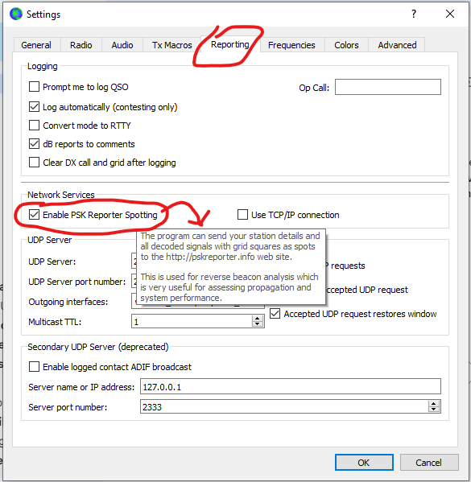

I still consider myself a bit new to the digital modes and got reminded again a few minutes ago. I was on 30 M FT8 and made a few QRP calls to A61QQ. When he left, I QSYed to 20 M and began to monitor. I made no calls at all. As I was doing something else in the shack, I noticed that I was being called by RV6FT. I returned the call with low power and did not complete the QSO. He called me about 4 times._______________________________________________The question is how he knew I was on the band? Does my enabling PSK Reporter in WSJT-X report my call even if I have not transmitted? It must, I guess but is done via the Internet but not via RF?The manual only says I am reported but now how or when.Thanks!Al N6TA
Chat mailing list
Chat@ncdxc.org
http://mail.ncdxc.org/mailman/listinfo/chat_ncdxc.org